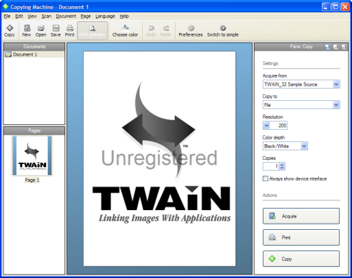

Advanced mode
The advanced mode of Copying Machine has more option to control the quality of the images. For example, it allows you to edit images before they are printed. If you only want to use the basic functions, then use the easy mode.
Main Window
The main window in contains the following components; a menu bar and a tool bar on top, on the left side a list of all open documents and a list of the pages in the current document. On the right side there is a pane with multiple functionalities; copying, editing the page en information about the page. Finally the center of the main window is the page viewer.
Copy a document
There are multiple ways to copy a document:
- In the toolbar press the button 'Copy'. The copying process will start.
- Choose for 'New document' or 'Acquire'. Both option will initiate the scanning process. When completed a new document will be added to the list of documents. This document can be edited and finally be printed.
Menu
The menu contains all the option Copying Machine has. The menu has the following groups:
Easy mode
The easy mode of Copying Machine is build for one purpose: copying a document quickly. It has all the tools you need. You can switch to this mode with the 'switch' option on the toolbar or in the 'View' Menu.